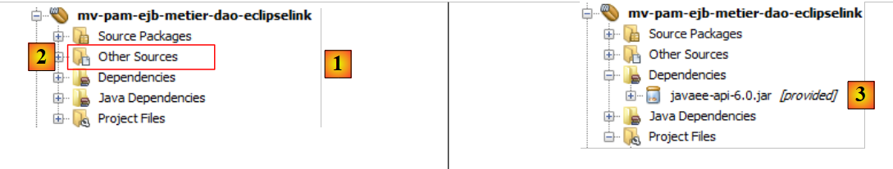
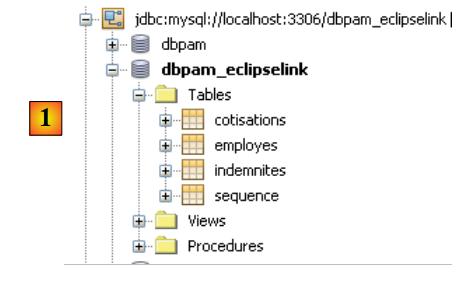
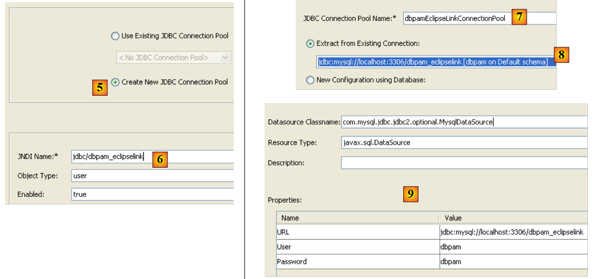
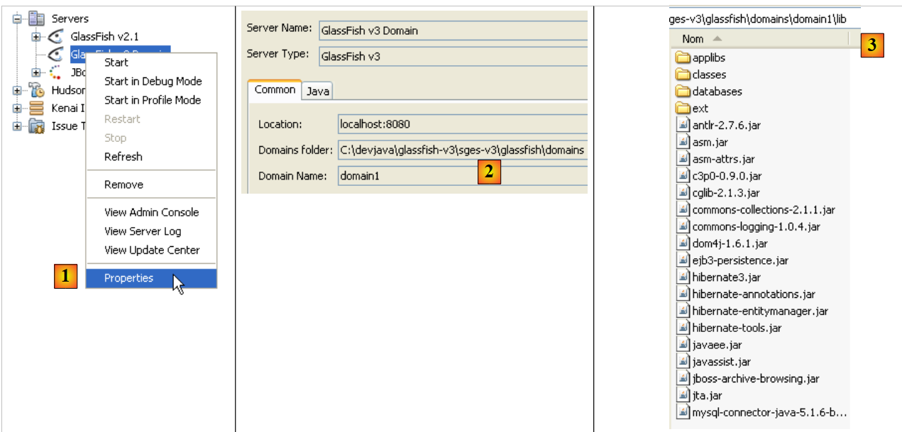
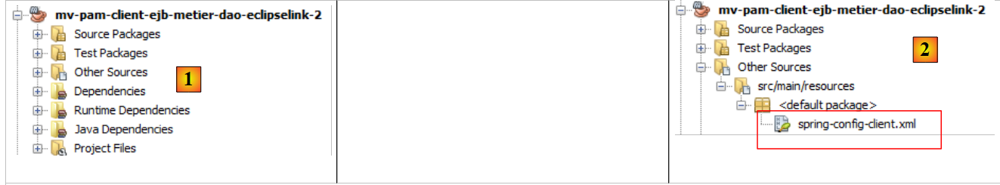

7. Versie 3: Porting van de applicatie PAM naar een Glassfish-applicatieserver
We zijn van plan om de EJB van de lagen [metier] en [DAO] van de architectuur OpenEJB / EclipseLink in de container van een Glassfish-applicatieserver te plaatsen.
De huidige implementatie met OpenEJB / EclipseLink
 |
Hierboven maakt de laag [ui] gebruik van de externe interface van de laag [metier].
We hebben twee uitvoeringscontexten getest: local en distant. In deze laatste modus was de laag [ui] een client van de laag [metier], een laag geïmplementeerd door EJB. Om in client/server-modus te werken, waarbij de client en de server in twee verschillende JVM-instanties draaien, plaatsen we de [metier, DAO, jpa]-lagen op de Java Glassfish-server EE. Deze server wordt meegeleverd met NetBeans.
De implementatie die met de Glassfish-server moet worden gebouwd
 |
- De laag [ui] zal worden uitgevoerd in een Java-omgeving SE (Standard Edition)
- de lagen [metier, DAO, JPA] zullen worden uitgevoerd in een Java-omgeving EE (Enterprise Edition) op een Glassfish v3-server
- de client zal via een TCP/IP-netwerk met de server communiceren. De netwerkcommunicatie is transparant voor de ontwikkelaar, hoewel hij zich er wel van bewust moet zijn dat de client en de server geserialiseerde objecten uitwisselen om te communiceren, en geen objectreferenties. Het netwerkprotocol dat voor deze uitwisselingen wordt gebruikt, heet RMI (Remote Method Invocation), een protocol dat uitsluitend tussen twee Java-toepassingen kan worden gebruikt.
- De JPA-implementatie die op de Glassfish-server wordt gebruikt, is EclipseLink.
7.1. Het servergedeelte ( ) van de client/server-toepassing PAM
7.1.1. De architectuur van de applicatie
We bekijken hier het servergedeelte dat wordt gehost door de container EJB3 van de Glassfish-server:
 |
Het gaat erom wat al is gedaan en getest met de container OpenEJB over te zetten naar de Glassfish-server. Dat is het voordeel van OpenEJB en in het algemeen van de ingebouwde EJB-containers: ze stellen ons in staat de applicatie te testen in een vereenvoudigde uitvoeringsomgeving. Zodra de applicatie is getest, hoeft deze alleen nog maar te worden overgezet naar een doelserver, in dit geval de Glassfish-server.
7.1.1.1. Het NetBeans-project
Laten we beginnen met het aanmaken van een nieuw NetBeans-project:
 |
- in [1], nieuw project
- in [2], kies de categorie Maven en in [3] het type EJB Module. Het gaat er namelijk om een project te bouwen dat wordt gehost en uitgevoerd door een container EJB, namelijk die van de Glassfish-server.
 |
- met de knop [4a] de bovenliggende map van de projectmap selecteren of de naam ervan rechtstreeks invoeren in [4b].
- in [5], geef het project een naam
- in [6], kies de applicatieserver waarop het project zal worden uitgevoerd. De hier gekozen server is een van de servers die zichtbaar zijn in het tabblad [Runtime / Servers], in dit geval Glassfish v3.
- in [7], kies de Java-versie EE.
 |
- in [1], het nieuwe project. Dit verschilt op een aantal punten van een klassiek Java-project:
- er wordt automatisch een branch [Other Sources] [2] aangemaakt. Deze bevat onder andere het bestand [persistence.xml] dat de laag JPA configureert,
- als we het project bouwen (Build), verschijnt er een afhankelijkheid [javaee-api-6.0] van [3]. Deze is van het type provided, omdat deze tijdens de uitvoering wordt geleverd door de Glassfish-container EJB.
7.1.1.2. Configuratie van de persistentielayer
Onder configuratie van de persistentielaag verstaan we het schrijven van het bestand [persistence.xml], waarin het volgende wordt gedefinieerd:
- de te gebruiken implementatie JPA
- de definitie van de gegevensbron die door de laag JPA wordt gebruikt. Dit is een JDBC-bron die door de Glassfish-server wordt beheerd.
 |
We kunnen als volgt te werk gaan. Allereerst maken we in het tabblad [Runtime / Databases] een verbinding aan met de database MySQL5 / dbpam_eclipselink:
 |
Zodra dit is gebeurd, kunnen we verdergaan met het aanmaken van de bron JDBC die wordt gebruikt door de module EJB:
 |
- in [1] een nieuw bestand aanmaken – zorg ervoor dat het project EJB is geselecteerd voordat je deze bewerking uitvoert
- in [2], het project EJB
- in [3], selecteer je de categorie [Glassfish]
- in [4] wil men een resource JDBC aanmaken
 |
- in [5], geef aan dat de resource JDBC een nieuwe verbindingspool gaat gebruiken. Ter herinnering: een verbindingspool is een pool van open verbindingen die dient om de communicatie tussen de applicatie en de database te versnellen.
- in [6], geef de aangemaakte bron JDBC de naam JNDI. Deze naam kan willekeurig zijn, maar heeft vaak de vorm jdbc/nom. Deze naam JNDI wordt in het bestand [persistence.xml] gebruikt om de gegevensbron aan te duiden die de implementatie JPA moet gebruiken.
- Geef in [7] een willekeurige naam aan de verbindingspool die zal worden aangemaakt
- Kies in de vervolgkeuzelijst [8] de verbinding JDBC die eerder is aangemaakt op basis van MySQL / dbpam_eclipselink.
- In [9] wordt een overzicht van de eigenschappen van de verbindingspool weergegeven – hier hoeven we niets aan te wijzigen
 |
- in [10] kunnen verschillende eigenschappen van de verbindingspool worden gespecificeerd – we laten de standaardwaarden staan
- in [11], na voltooiing van de wizard voor het aanmaken van een bron JDBC voor de module EJB, is er een bestand [glassfish-resources.xml] aangemaakt in de tak [Other Sources]. De inhoud van dit bestand is als volgt:
<?xml version="1.0" encoding="UTF-8"?>
<!DOCTYPE resources PUBLIC "-//GlassFish.org//DTD GlassFish Application Server 3.1 Resource Definitions//EN" "http://glassfish.org/dtds/glassfish-resources_1_5.dtd">
<resources>
<jdbc-resource enabled="true" jndi-name="jdbc/dbpam_eclipselink" object-type="user" pool-name="dbpamEclipselinkConnectionPool">
<description/>
</jdbc-resource>
<jdbc-connection-pool allow-non-component-callers="false" associate-with-thread="false" connection-creation-retry-attempts="0" connection-creation-retry-interval-in-seconds="10" connection-leak-reclaim="false" connection-leak-timeout-in-seconds="0" connection-validation-method="auto-commit" datasource-classname="com.mysql.jdbc.jdbc2.optional.MysqlDataSource" fail-all-connections="false" idle-timeout-in-seconds="300" is-connection-validation-required="false" is-isolation-level-guaranteed="true" lazy-connection-association="false" lazy-connection-enlistment="false" match-connections="false" max-connection-usage-count="0" max-pool-size="32" max-wait-time-in-millis="60000" name="dbpamEclipselinkConnectionPool" non-transactional-connections="false" pool-resize-quantity="2" res-type="javax.sql.DataSource" statement-timeout-in-seconds="-1" steady-pool-size="8" validate-atmost-once-period-in-seconds="0" wrap-jdbc-objects="false">
<property name="URL" value="jdbc:mysql://localhost:3306/dbpam_eclipselink"/>
<property name="User" value="root"/>
<property name="Password" value=""/>
</jdbc-connection-pool>
</resources>
Het bestand [glassfish-resources.xml] is een XML-bestand dat alle door de wizard verzamelde gegevens bevat. Dit bestand wordt door NetBeans gebruikt om, bij de implementatie van de module EJB op de GlassFish-server, het aanmaken aan te vragen van de resource JDBC die deze module nodig heeft.
Nu kan het bestand [persistence.xml] worden aangemaakt, dat de laag JPA van de module EJB zal configureren:
 |
- in [1], maak een nieuw bestand aan – zorg ervoor dat het project EJB is geselecteerd voordat je deze handeling uitvoert
- in [2], het project EJB
- in [3], selecteer je de categorie [Persistence]
- in [4] wil men een persistentie-eenheid aanmaken
 |
- in [5], geef de persistentie-eenheid een naam
- in [6] worden meerdere implementaties JPA voorgesteld. We kiezen hier voor [EclipseLink]. Andere implementaties zijn bruikbaar op voorwaarde dat de bibliotheken die deze implementeren samen met die van de Glassfish-server worden geplaatst.
- Kies in de vervolgkeuzelijst [7] de zojuist aangemaakte gegevensbron JDBC [jdbc/dbpam_eclipselink].
- Geef in [8] aan dat de transacties worden beheerd door de container EJB
- geef in [9] aan dat er geen bewerkingen op de gegevensbron mogen worden uitgevoerd bij de implementatie van de module EJB op de server. De module EJB zal namelijk gebruikmaken van een reeds aangemaakte database [dbpam_eclipselink].
- Aan het einde van de wizard is een bestand [persistence.xml] aangemaakt met de naam [10]. De inhoud ervan is als volgt:
<?xml version="1.0" encoding="UTF-8"?>
<persistence version="2.0" xmlns="http://java.sun.com/xml/ns/persistence" xmlns:xsi="http://www.w3.org/2001/XMLSchema-instance" xsi:schemaLocation="http://java.sun.com/xml/ns/persistence http://java.sun.com/xml/ns/persistence/persistence_2_0.xsd">
<persistence-unit name="mv-pam-ejb-metier-dao-eclipselinkPU" transaction-type="JTA">
<jta-data-source>jdbc/dbpam_eclipselink</jta-data-source>
<exclude-unlisted-classes>false</exclude-unlisted-classes>
<properties/>
</persistence-unit>
</persistence>
- regel 3: de naam van de persistentie-eenheid [mv-pam-ejb-metier-dao-eclipselinkPU] en het transactietype (JTA voor een container EJB)
- regel 5: de naam JNDI van de gegevensbron die door de persistentielaag wordt gebruikt: jdbc/dbpam_eclipselink
- regel 6: de entiteiten JPA zijn niet gespecificeerd. Ze worden gezocht in het classpath van de module EJB.
- De naam van de gebruikte implementatie JPA (Hibernate, EclipseLink, ...) is niet opgegeven. In dit geval gebruikt Glassfish v3 standaard EclipseLink.
7.1.1.3. Toevoegen van de lagen [jpa, DAO, metier]
Nu het bestand [persistence.xml] is gedefinieerd, kunnen we overgaan tot het invoegen van de lagen [metier, dao, jpa] van de bedrijfsapplicatie [pam] in het project:
 |
Deze drie lagen zijn identiek aan wat ze waren bij OpenEJB. We kunnen ze eenvoudig kopiëren en plakken tussen de twee projecten. Dat gaan we nu doen:
 |
- in [1], het resultaat van het kopiëren van de pakketten [jpa, dao, metier, exception] uit het project [mv-pam-openejb-eclipselink] naar de module EJB [mv-pam-ejb-metier-dao-jpa-eclipselink]
7.1.1.4. Configuratie van de Glassfish-server
We moeten de Glassfish-server nog op twee punten configureren:
- de laag JPA wordt geïmplementeerd door EclipseLink. We moeten ervoor zorgen dat de Glassfish-server beschikt over de bibliotheken van deze implementatie JPA.
- De gegevensbron is een database met de naam MySQL. We moeten ervoor zorgen dat de Glassfish-server beschikt over de driver JDBC voor deze database SGBD.
Het ontbreken van deze bibliotheken kan aan het licht komen bij het implementeren van de module EJB. Hieronder volgt een van de vele manieren om ontbrekende bibliotheken aan de Glassfish-server toe te voegen:
 |
- naar [1], bekijk de eigenschappen van de Glassfish-server
- in [2], noteer de map met de domeinen van de server. We noteren deze hierna als <domains>
- in de map <domains>\domain1\lib de ontbrekende bibliotheken plaatsen. In het voorbeeld zijn de Hibernate-bibliotheken (lib / hibernate-tools) en de driver JDBC van MySQL (lib / divers) toegevoegd. Standaard beschikt de Glassfish-server over de bibliotheken van EclipseLink. We voegen dus alleen de driver JDBC van MySQL toe.
 |
- in [1], op het tabblad [Services] starten we de Glassfish v3-server
- in [2], deze is actief
7.1.1.5. Implementatie van de module EJB
We implementeren nu de module EJB op de Glassfish-server:
 |
- in [1], de module EJB is geïmplementeerd
- in [2] wordt de boomstructuur van de Glassfish-server vernieuwd
- bij [3] verschijnt de module EJB na de implementatie in de tak [Applications] van de Glassfish-server
- in [4] is de bron JDBC [jdbc / dbpam_eclipselink] aangemaakt op de GlassFish-server. Ter herinnering: we hadden deze gedefinieerd in paragraaf 7.1.1.2.
Tijdens de implementatie registreert de Glassfish-server interessante informatie in de console:
Op de regels
- 3, 6, 8 en 11 de draagbare namen JNDI van de geïmplementeerde EJB. Java EE 6 heeft het concept van de draagbare naam JNDI geïntroduceerd. Dit duidt op een JNDI-naam die door alle Java EE 6-servers wordt herkend. Bij Java EE 5 zijn de JNDI-namen specifiek voor de gebruikte server.
- 4, 7, 9, 12: de namen JNDI van de EJB die in een voor Glassfish v3 specifieke vorm zijn geïmplementeerd.
Deze namen zijn nuttig voor de console-applicatie die we gaan schrijven om de geïmplementeerde module EJB te gebruiken.
7.2. Console-client – versie 1
Nu we het servergedeelte van onze client/server-applicatie hebben geïmplementeerd, gaan we het clientgedeelte [1] bestuderen:
 |
7.2.1. Het clientproject
We maken een nieuw Maven-project van het type [Java Application] met de naam [mv-pam-client-ejb-metier-dao-eclipselink]:
 |
- in [1], het project van de klant
In het bestand [pom.xml] voegen we de volgende afhankelijkheden toe:
<project xmlns="http://maven.apache.org/POM/4.0.0" xmlns:xsi="http://www.w3.org/2001/XMLSchema-instance"
xsi:schemaLocation="http://maven.apache.org/POM/4.0.0 http://maven.apache.org/xsd/maven-4.0.0.xsd">
<modelVersion>4.0.0</modelVersion>
<groupId>istia.st</groupId>
<artifactId>mv-pam-client-ejb-metier-dao-eclipselink</artifactId>
<version>1.0-SNAPSHOT</version>
<packaging>jar</packaging>
<name>mv-pam-client-ejb-metier-dao-eclipselink</name>
<url>http://maven.apache.org</url>
<repositories>
<repository>
<url>http://download.eclipse.org/rt/eclipselink/maven.repo/</url>
<id>eclipselink</id>
<layout>default</layout>
<name>Repository for library Library[eclipselink]</name>
</repository>
<repository>
<url>http://repo1.maven.org/maven2/</url>
<id>swing-layout</id>
<layout>default</layout>
<name>Repository for library Library[swing-layout]</name>
</repository>
</repositories>
<properties>
<project.build.sourceEncoding>UTF-8</project.build.sourceEncoding>
</properties>
<dependencies>
<dependency>
<groupId>org.glassfish.appclient</groupId>
<artifactId>gf-client</artifactId>
<version>3.1.1</version>
</dependency>
<dependency>
<groupId>${project.groupId}</groupId>
<artifactId>mv-pam-ejb-metier-dao-eclipselink</artifactId>
<version>${project.version}</version>
<type>ejb</type>
</dependency>
<dependency>
<groupId>org.swinglabs</groupId>
<artifactId>swing-layout</artifactId>
<version>1.0.3</version>
</dependency>
</dependencies>
</project>
- regels 31-35: de afhankelijkheid van de bibliotheek [gf-client], waarmee een Classfish-client met een externe server kan communiceren,
- regels 36-41: de afhankelijkheid van het Maven-project van de module EJB. We willen hier de definities van de entiteiten JPA en die van de verschillende interfaces ophalen, evenals die van de uitzonderingsklasse [PamException],
Vanuit het project [mv-pam-openejb-eclipselink] kopiëren we de klasse [MainRemote]:
 |
De klasse [MainRemote] moet een verwijzing krijgen naar EJB van de laag [metier]. De code van de klasse [MainRemote] verandert als volgt:
// Het is in orde – we kunnen de loonstrook opvragen
FeuilleSalaire feuilleSalaire = null;
IMetierRemote metier = null;
try {
// context JNDI van de Glassfish-server
InitialContext initialContext = new InitialContext();
// instantiëring van de businesslaag
metier = (IMetierRemote) initialContext.lookup("java:global/istia.st_mv-pam-ejb-metier-dao-eclipselink_ejb_1.0-SNAPSHOT/Metier!metier.IMetierRemote");
// berekening van de loonstrook
feuilleSalaire = metier.calculerFeuilleSalaire(args[0], nbHeuresTravaillées, nbJoursTravaillés);
} catch (PamException ex) {
System.err.println("L'erreur suivante s'est produite : "
+ ex.getMessage());
return;
} catch (Exception ex) {
System.err.println("L'erreur suivante s'est produite : "
+ ex.toString());
return;
}
- regel 6: initialisatie van de context JNDI van de Glassfish-server.
- regel 8: aan deze context JNDI wordt een verwijzing gevraagd naar de externe interface van de laag [metier]. Uit de logbestanden van Glassfish blijkt dat de externe interface van de laag [metier] twee mogelijke namen heeft:
Regel 1: de naam JNDI, die bruikbaar is met elke applicatieserver: JAVA, EE, enzovoort. Regel 2: de naam JNDI, die specifiek is voor GlassFish. In de code, regel 9, gebruiken we de draagbare naam JNDI.
- De rest van de code blijft ongewijzigd
 |
In [1] configureren we het project zodat het de klasse [MainRemote] met argumenten uitvoert. Als alles goed gaat, levert de uitvoering van het project het volgende resultaat op:
Als je in de eigenschappen een onjuist sofinummer invoert, krijg je het volgende resultaat:
7.3. Console-client – versie 2
In eerdere versies werd de JNDI-omgeving van de Glassfish-server geconfigureerd aan de hand van een bestand [jndi.properties] dat ergens in de projectarchieven te vinden was. De standaardinhoud ervan is als volgt:
# toegang tot Sun Application Server via JNDI
java.naming.factory.initial=com.sun.enterprise.naming.SerialInitContextFactory
java.naming.factory.url.pkgs=com.sun.enterprise.naming
# Vereist om een javax.naming.spi.StateFactory toe te voegen voor CosNaming, dat
# dynamische RMI-IIOP ondersteunt.
java.naming.factory.state=com.sun.corba.ee.impl.presentation.rmi.JNDIStateFactoryImpl
org.omg.CORBA.ORBInitialHost=localhost
org.omg.CORBA.ORBInitialPort=3700
De regels 7 en 8 verwijzen naar de machine van de JNDI-service en de luisterpoort daarvan. Met dit bestand is het niet mogelijk om een andere JNDI-server te benaderen dan localhost, of een server die op een andere poort draait dan 3700. Als u deze twee parameters wilt wijzigen, kunt u uw eigen [jndi.properties]-bestand maken of een Spring-configuratie gebruiken. We laten deze tweede techniek zien.
We beginnen met het aanmaken van een nieuw project op basis van het oorspronkelijke project [pam-client-metier-dao-jpa-eclipselink].
 |
- in [1], het nieuwe project
- in [2], het Spring-configuratiebestand [spring-config-client.xml]. De inhoud ervan is als volgt:
Het Spring-configuratiebestand ziet er als volgt uit:
<?xml version="1.0" encoding="UTF-8"?>
<beans xmlns="http://www.springframework.org/schema/beans" xmlns:xsi="http://www.w3.org/2001/XMLSchema-instance"
xmlns:tx="http://www.springframework.org/schema/tx"
xmlns:jee="http://www.springframework.org/schema/jee"
xsi:schemaLocation="
http://www.springframework.org/schema/beans
http://www.springframework.org/schema/beans/spring-beans-2.0.xsd
http://www.springframework.org/schema/tx
http://www.springframework.org/schema/tx/spring-tx-2.0.xsd
http://www.springframework.org/schema/jee
http://www.springframework.org/schema/jee/spring-jee-2.0.xsd">
<!-- beroep -->
<jee:jndi-lookup id="metier" jndi-name="java:global/istia.st_mv-pam-ejb-metier-dao-eclipselink_ejb_1.0-SNAPSHOT/Metier!metier.IMetierRemote">
<jee:environment>
java.naming.factory.initial=com.sun.enterprise.naming.SerialInitContextFactory
java.naming.factory.url.pkgs=com.sun.enterprise.naming
java.naming.factory.state=com.sun.corba.ee.impl.presentation.rmi.JNDIStateFactoryImpl
org.omg.CORBA.ORBInitialHost=localhost
org.omg.CORBA.ORBInitialPort=3700
</jee:environment>
</jee:jndi-lookup>
</beans>
We gebruiken hier een <jee>-tag (regel 14) die met Spring 2.0 is geïntroduceerd. Om deze tag te kunnen gebruiken, moet het schema worden gedefinieerd waartoe deze behoort, regels 4, 10 en 11.
- regel 14: met de tag <jee:jndi-lookup> kan de referentie van een object worden opgehaald bij een service JNDI. Hier wordt de bean met de naam "metier" gekoppeld aan de resource JNDI, die is gekoppeld aan de EJB en [Metier]. De hier gebruikte naam JNDI is de draagbare naam (Java EE 6) van de EJB.
- De inhoud van het bestand [jndi.properties] wordt de inhoud van de tag <jee:environment> (regel 15), die dient om de verbindingsparameters voor de service JNDI te definiëren.
De hoofdklasse [MainRemote] verandert als volgt:
Regels 7-8: de typereferentie [IMetierRemote] op de laag [metier] wordt opgevraagd bij Spring. Deze oplossing zorgt voor flexibiliteit in onze architectuur. Als de EJB van de laag [metier] namelijk lokaal zou worden, c.a.d, in dezelfde JVM zou worden uitgevoerd als onze client [MainRemote], zou de code van deze laatste niet veranderen. Alleen de inhoud van het bestand [spring-config-client.xml] zou veranderen. We zouden dan een configuratie aantreffen die vergelijkbaar is met de Spring-architectuur / JPA die in paragraaf 5.11 is besproken.
De lezer wordt uitgenodigd om deze nieuwe versie te testen.
7.4. De Swing-client
We bouwen nu de client swing van onze client/server-toepassing EJB.
 |
Het bestand [pom.xml] moet de nodige afhankelijkheid van de Swing-toepassingen bevatten:
<dependency>
<groupId>org.swinglabs</groupId>
<artifactId>swing-layout</artifactId>
<version>1.0.3</version>
</dependency>
Hierboven was de klasse [PamJFrame] oorspronkelijk geschreven om uit te voeren in een Spring-omgeving / JPA:
 |
Nu moet deze klasse de externe client worden van een EJB die op de Glassfish-server is geïmplementeerd.
 |
Praktische opdracht: volg het voorbeeld van de console-client [ui.console.MainRemote] uit het project en pas de manier aan waarop de methode [doMyInit] (zie paragraaf 5.12.4) van de klasse [PamJFrame] wordt gebruikt om een verwijzing te verkrijgen naar de laag [metier], die nu op afstand staat.